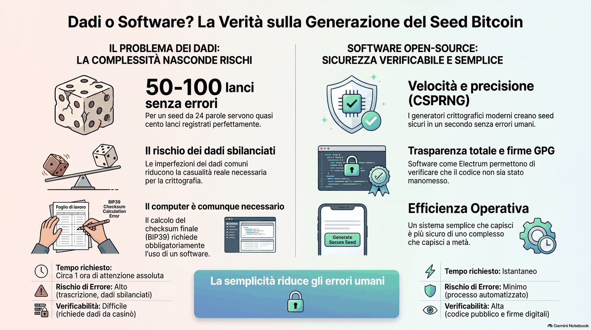

Questo articolo comincia con un consiglio insolito, soprattutto se a darlo è chi fa consulenza: non fidatevi ciecamente di nessuno. Non dei video, non dei gruppi, non degli influencer — e nemmeno di noi. Nel mondo Bitcoin chiunque può dire qualsiasi cosa con grande sicurezza, e un consiglio sbagliato può costare caro.
Approfondite sempre quello che vi viene detto. Confrontate le fonti, cercate il parere opposto, fate domande scomode. Un consulente serio non si offende se verificate le sue affermazioni: vi incoraggia a farlo, perché è esattamente così che si impara a stare in piedi da soli.
E oggi mettiamo alla prova questo principio su una moda che gira da un po'.
La moda del seed coi dadi
Nei gruppi e nei tutorial si vede sempre più spesso questa idea: invece di lasciare che il wallet generi il seed — la lista di 12 o 24 parole che controlla i tuoi bitcoin — lo si crea "a mano", lanciando i dadi e convertendo i risultati in parole.
Il fascino è comprensibile. Nessun software di cui fidarsi, casualità fisica che puoi toccare, la sensazione di controllo totale fin dal primo istante. Sembra il massimo della sovranità.
La spinta nasce da un dubbio legittimo: "e se il software che genera il seed fosse difettoso, o manomesso?". La domanda è giusta, e va presa sul serio. Ma proprio perché è seria, la risposta va cercata con metodo — non con l'improvvisazione.
E diciamolo subito, per onestà: fatto perfettamente, sapendo esattamente cosa si sta facendo, è un metodo valido. Il problema sta tutto dentro quella parola: "perfettamente".
Perché è più difficile di quanto sembra
I problemi sono tre, in ordine crescente di importanza.

1. Servono tanti lanci, col metodo giusto
Un normale dado a sei facce produce circa due bit e mezzo di casualità ("entropia") per lancio: per un seed da 12 parole servono circa cinquanta lanci, per uno da 24 quasi cento — tutti registrati e convertiti senza errori. Chi improvvisa spesso lancia troppo poco, o usa un metodo di conversione che butta via casualità senza accorgersene. Il risultato sembra un seed normale, ma è più debole di quanto dovrebbe — e nessun segnale te lo dice.
2. I dadi devono essere davvero bilanciati
I dadi da gioco non nascono per la crittografia: piccole imperfezioni di fabbricazione rendono alcune facce più probabili di altre, e ogni sbilanciamento riduce la casualità reale. Esistono dadi da casinò di precisione, ma è un altro dettaglio da conoscere, procurarsi e verificare.
3. Alla fine serve comunque un computer
Ed è il punto che quasi nessuno dice. Nello standard BIP39, l'ultima parola del seed contiene un codice di controllo ("checksum") che va calcolato con una funzione crittografica a partire da tutta la casualità generata. A mano non si fa: serve un computer e un software fidato che esegua il calcolo — e lo stesso vale poi per creare gli indirizzi e usare il wallet.
Ma allora il punto debole della catena torna a essere proprio quello che coi dadi volevi eliminare: il software e la macchina su cui gira. Hai aggiunto complessità e fatica, senza eliminare la fiducia nel computer.
La via semplice (e di solito più sicura)
Ogni telefono e computer moderno contiene un generatore di numeri casuali progettato apposta per la crittografia. Si chiama CSPRNG — generatore pseudo-casuale crittograficamente sicuro — ed è lo stesso meccanismo che protegge le connessioni della tua banca e i tuoi messaggi cifrati. È studiato, testato e attaccato da decenni dalla comunità mondiale della sicurezza: tutto tranne che un componente improvvisato.
Un wallet serio non fa altro che chiedere la casualità a questo generatore e costruirci sopra il seed, checksum compreso, senza errori di metodo. In un secondo fa, bene, quello che coi dadi richiede un'ora di attenzione assoluta.
E qui torna il dubbio legittimo di prima: come faccio a sapere che il wallet usa il generatore nel modo giusto? È esattamente il motivo per cui insistiamo sull'open source: il codice è pubblico, e il modo in cui il seed viene costruito è verificato da migliaia di occhi indipendenti da anni. Non è fiducia cieca in qualcuno — è fiducia distribuita su una comunità intera.
Il nostro riferimento è Electrum: open source dal 2011, tra i wallet più longevi, esaminati e collaudati di tutto l'ecosistema Bitcoin — ed è lo strumento su cui si concentra la specialità di SAFE21. Su telefono, BlueWallet è un'alternativa open source e collaudata per iniziare.
Valgono le solite regole: scaricare solo dal sito ufficiale, mai da link nei messaggi o dalle pubblicità; e il seed appena generato — comunque sia nato — non deve mai toccare internet.
C'è di più: il software che consigliamo non va preso sulla fiducia, si può verificare. Ogni versione di Electrum viene firmata dai suoi sviluppatori con una firma digitale GPG — un sigillo elettronico che conferma chi ha davvero rilasciato quel file (Electrum ne ha più d'una, di persone diverse). E insieme al programma viene pubblicata la sua impronta crittografica (hash SHA-256): una specie di impronta digitale del file. Calcolando l'impronta di ciò che hai scaricato e confrontandola con quella pubblicata, verifichi che il file sia identico bit per bit a quello open source esaminato da migliaia di occhi in tutto il mondo — nessuna riga aggiunta, nessuna manomissione. Chi ha competenze tecniche può farlo da solo in pochi minuti; chi non le ha può farsi guidare passo-passo da noi, o anche da una delle IA oggi disponibili. Il punto è che la possibilità di controllare esiste, ed è alla portata di tutti: è questa la differenza tra fidarsi e verificare.
Detto in una riga
Per la maggior parte delle persone, il generatore del proprio dispositivo usato da un wallet open source collaudato è più sicuro dei dadi — a meno di non fare ogni singolo passaggio alla perfezione.
Una storia vera
Conosciamo un programmatore che anni fa ha lasciato l'Italia con parecchi bitcoin, sentendosi ricco e libero. Persona tecnica, competente: il seed se l'era generato da solo, a modo suo. A un certo punto ha commesso degli errori nella gestione delle chiavi private e pubbliche.
Morale: si è ritrovato in un Paese nuovo, senza i bitcoin che credeva di avere. Un errore suo, pagato carissimo. Oggi non sbaglia più — ma quella lezione se la porta addosso.
E parliamo di un programmatore. Se può capitare a chi lo fa di mestiere, l'idea che "a me non succede" è la prima da abbandonare.
Il dettaglio da notare: a tradirlo non è stata l'ignoranza, ma la complessità che si era costruito da solo. Con una configurazione standard, fatta bene e capita fino in fondo, quei bitcoin sarebbero ancora suoi.
Più semplicità, meno errori
Diciamolo senza girarci intorno: troppo spesso chi conosce a fondo Bitcoin se la tira. Vuole far vedere quante cose sa, riempie le persone di sigle, distinguo e configurazioni avanzate — e ottiene soltanto confusione. E la confusione produce errori. Gli errori umani si pagano: in Bitcoin non c'è un'assistenza clienti a cui chiedere il rimborso.
Il nostro consiglio va nella direzione opposta. State nel semplice, state cauti, col giusto grado di serenità. Un sistema semplice che capite fino in fondo è più sicuro di un sistema sofisticato che capite a metà. Più semplicità significa meno errori umani — e spesso anche più efficacia.
E restate sempre un po' curiosi: la curiosità fa crescere. È la fretta di strafare che fa i danni.
Bitcoin è come guidare un'auto
Niente di tutto questo deve fare paura. Per mettere le cose in prospettiva, l'immagine che usiamo più spesso è questa: usare Bitcoin è come guidare un'auto.
Per guidare serve un minimo di teoria e di pratica: senza, l'auto diventa pericolosa. Ma non serve conoscere l'elettronica di bordo, il funzionamento del motore, la chimica della combustione o la fisica delle sospensioni. Serve sapere dove sono i comandi, rispettare poche regole fondamentali e conoscere i propri limiti.
Con Bitcoin è lo stesso. Serve la patente — le regole di base sulla custodia del seed e un po' di pratica guidata — non la laurea in ingegneria. Chi vuole è libero di studiarsi il motore, che nel nostro caso è la crittografia: è anche un viaggio bellissimo. Ma non è indispensabile per guidare in sicurezza.
E come per la guida, le prime uscite è meglio non farle da soli: qualche ora di pratica accompagnata evita gli errori che si fanno una volta sola.